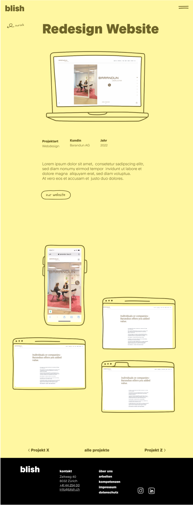
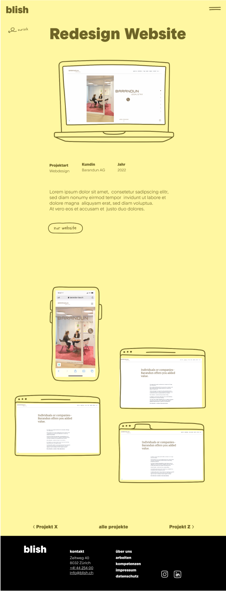

Jung von Matt SERVICES soll eigenständiger und unabhängiger von Jung von Matt Limmat auftreten können. Aus diesem Grund wurde blish ins Leben gerufen. Dafür benötigten wir einen neuen, frischen und jungen Auftritt. Von der Jung von Matt BI gab es ein grob definiertes Branding, anhand dessen wir in erster Linie unsere eigene Webseite und später interne Geschäftsdrucksachen gestalteten.
Die Gestaltung der Webseite erarbeitete ich zusammen mit Roman Aebi, mein Teamkollege. Für die Programmierung war Lisa Moser zuständig, jedoch war sie auch wichtig für die Absprache der Realisierbarkeit einiger Ideen.
In einer ersten Runde suchten wir nach Inspirationen und besprachen diese mit unserer Vorgesetzten in welche Designrichtung wir gehen wollen. Daraus folgten erste Wireframes in Farbe, welche wir in einer grösseren Runde besprachen. Illustrationen und eine Logoanimation sollen eingebaut werden. Ich zeichnete die Illustrationen und Roman erstellte die Animation. Zusammen bauten wir den Lofi-Prototypen auf und besprachen unsere Teilschritte. Nach wenigen Feedbackrunden wurde der Hifi-Prototyp erarbeitet, sowie die Illustrationen verfeinert und die Logoanimation finalisiert. Nach dem OK der Gruppe wurde das XD-File bereinigt und der Programmierung übergeben.
 
Die Designphase war in meinen Augen eher kurz gehalten und man hätte agiler mit der Programmierung zusammen arbeiten können. Im laufe der Zeit hätte man so einige Schlaufen umgangen und schon früher mit der Programmierung losgelegt. Da das Tages-Business nebenbei auf Hochtouren lief, wurde das Timing gegen Schluss enger und wir mussten auf einen Freelancer für die Programmierung ausweichen.
Es war das erste richtige Webprojekt und das wurde noch etwas mit einer zu lockeren Einstellung angegangen. Später merkte man, dass bei der Programmierung etwas chaotisch gearbeitet wurde, was es etwas verkomplizierte neue Beiträge und Anpassungen hinterher vorzunehmen.
Auch beim Branding wurden einige Regeln definiert, die das Webdesign eher einschränkten und zu kleinen Hindernissen führten. Ein grosser Knotenpunkt war der Umgang mit den vordefinierten Farben.